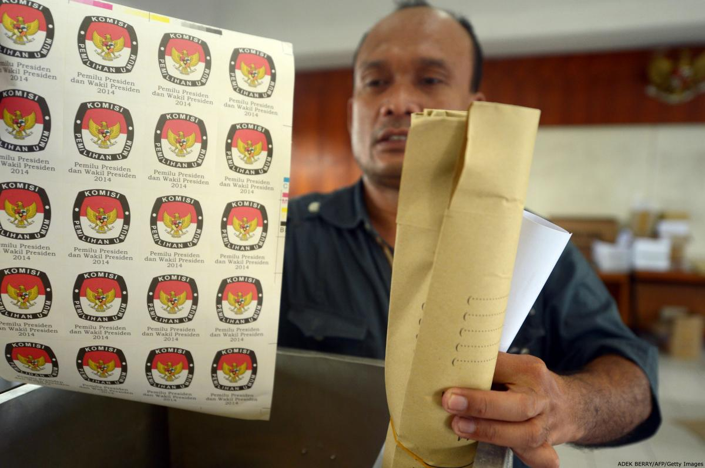

نظارت اخلاقی و حرفهای انتخابات
کارکرد نظارت انتخاباتی
در کاربرد عامه، هر گونه حضور خارجی در انتخابات ممکن است به عنوان «نظارت» تلقی شود. اين تعبير ممکن است باعث سردرگمی شود چون مردم اين کلمه را برای اشاره به هر يکی از پنج فعاليت مختلف زير به کار بردهاند:
۱. میانجیگری، که نوعی از مداخله طرف ثالث در یک دعواست که با هدف کمک کردن به مدعيان به دنبال يافتن راهحل مورد توافق طرفین باشد.
۲. کمک فنی، که عمدتاً شکل پشتيبانی فنی در روند انتخابات را به خود میگيرد.
۳. سرپرستی، که روند گواهی کردن اعتبار همه يا بخشی از مراحل روند انتخاباتی است.
۴. بازبينی، به معنای درگير بودن مسئول نظارت روند انتخاباتی و دخالت در آن روند در صورتی که قوانين يا روندهای معيار نقض شده یا ناديده گرفته شوند.
۵. نظارت، به معنای گردآوری اطلاعات و رسیدن به داوری آگاهانهای مبتنی بر آن اطلاعات.

ميانجیگری و کمک فنی
هم ميانجیگری و هم کمک فنی فعاليتهايی گستردهاند که اغلب مستلزم حضور خارجی هستند. هر چند وظايف مربوط به این نوع فعاليتها عمدتاً با وظایف یک نفر ناظر فرق دارند، به دلايل زير، این وظايف ممکن است با نظارت خلط شوند:
۱. گاهی اوقات، يک سازمان اجازه اجرای هر سه کارکرد را در یک انتخابات دارد.
۲. حتی اگر يک سازمان تنها مسئول نظارت باشد، ممکن است برای آن سازمان دشوار باشد که از ميانجیگری يا ارائه کمک در صورتی که در روند انتخابات از او خواسته شود، امتناع کند به ویژه در مواردی که نقش آنها مستلزم جانبداری در کارکرد نظارت نباشد.
۳. هر يک از اين سه نقش سهمی در محقق کردن مجموعه مشترکی از اهداف را دارند يعنی مشروعیت بخشيدن به روند انتخابات، اعتمادسازی، بهبود چشماندازهای دموکراسیسازی، تقويت روند انتخاباتی، کاهش و یا جلوگيری از درگيری. علاوه بر اين، ارائه ميانجیگری يا کمک اغلب میتواند نياز به نظارت را کاهش داده و باعث شود دستيابی به اهداف مشترک با منابع کمتری آسانتر شود.
سرپرستی و بازبينی
سرپرستی و بازبينی گاهی با نظارت خلط میشوند چون هر سه فعاليت مبتنی بر گردآوری اطلاعات مربوط به روند انتخاباتی و سپس داوری درباره آن روند بر اساس اطلاعات گردآوری شده است. اما، سرپرستی و بازبينی به دلايل زير تفاوت مهمی با نظارت دارند:
۱. سرپرستان و يا بازبينان قدرت بسيار بيشتری از ناظران دارند.
۲. سرپرستان و يا بازبينان، به اقتضای قدرت بيشترشان، معمولاً نسبت به ناظران مشمول مقررات رفتاری سختتری هستند.
۳. کارکرد سرپرستان و بازبينان میتواند پای آنها را به خودِ روند مديريت انتخابات نيز باز کرده و آنها را درگير ماجرا کند.
سرپرستی خارجیها در روند انتخابات در بعضی از رأیگيریها، مثلاً در انتخابات ناميبيا در نوامبر سال ۱۹۸۹ و در بوسنی در سپتامبر سال ۱۹۹۶، ضروری بوده است. از طرف ديگر، اختيار دخالت که بخشی از کارکرد بازبينی است به ندرت به خارجیها داده میشود هر چند در بعضی از موارد اين اختيار به کارمندان نهاد مديريت انتخابات داده میشود. مثلاً، تجربه انتخابات آفریقای جنوبی در آوريل سال ۱۹۹۴ اهميت بازبينی داخلی انتخابات را توسط مسئولان نهاد انتخاباتی نشان داد.
نظارت
در چارچوب اهداف اين مجموعه «مقررات رفتاری»، نظارت يعنی: «گردآوری هدفمند اطلاعات مربوط به روند انتخاباتی و قضاوتهای آگاهانه درباره اجرای اين روند بر مبنای اطلاعات گردآوری شده توسط افرادی که اصولا اجازه دخالت در این روند را ندارند؛ و درگيری آنها در ميانجیگری يا فعاليتهای کمک فنی چنان نباشد که مسئوليتهای اصلی نظارت آنها را به مخاطره بيندازد.»
کلمهی ناظر میتواند معانی متعددی داشته باشد:
۱. در بعضی موارد، افرادی که به محل فرستاده میشوند ناظر تلقی میشوند.
۲. در ساير موارد، که سازمانی در امر نظارت درگير است، ممکن است اين ديدگاه را اتخاذ کند که اين سازمان، يا مدير اجرايیاش، «ناظر» است و پرسنلی که برای اين کار به محل میفرستد تنها کارکنان و عاملان آن و «چشم و گوش» آن هستند.
۳. ممکن است وضعيتی پيش بيايد که در آن چند سازمان در پی راهاندازی يک عمليات نظارت مشترک باشند يا در بعضی زمينهها با هم همکاری کنند و در اين مورد ممکن است مناسب باشد که اين ساختار منسجمی را که آنها به منظور اين عمليات ايجاد کردهاند، «ناظر» بخوانيم.
۴. «ناظران» میتوانند بسته به ماهيت و حيطه اختيارات و طول مدت اقامتشان به عنوان ناظر در کشور «ناظران کوتاهمدت» يا «ناظران درازمدت» ناميده شوند.
نظارت انتخابات بايد با اصول اخلاقی بنيادين زیر سازگاری داشته باشد:
۱. ناظران انتخابات بايد حق حاکميت کشور ميزبان را به رسميت شناخته و به آن احترام بگذارند.
۲. ناظران انتخابات بايد غيرحزبی و بیطرف باشند.
۳. ناظران انتخابات بايد در بررسیشان از انتخابات جامعنگر باشند و به همه وضعيتها و شرايط مربوط توجه داشته باشند.
۴. ناظران انتخابات بايد شفاف عمل کنند.
۵. ناظران انتخابات بايد دقيق باشند.
غرض از اين اصول اين است که برای همه انواع نظارت که در بالا آمده است لازمالاجرا باشند. بسته به وضعيت، بعضی از اين اصول ممکن است برای يک مفهوم خاص از «ناظر» سادهتر مصداق داشته باشند تا برای نوعی ديگر و اين مقررات بايد به شکل انعطافپذيری تفسير شوند تا با شرایط حاکم نسبت داشته باشند. مثلاً، اگر فقط يک سازمان درگير امر نظارت باشد، مسئوليت کامل جامعيت را به عهده دارد، اما اگر چندين نهاد کارکرد هماهنگی نظارت را به عهده داشته باشند، وظيفه جامع بودن به همه اجزای اين عملیات مشترک تسری پيدا میکند و نه به هر يک از نهادهای همکار در اين کوشش.
اين اصول بايد برای همه فعاليتهای ناظر لازمالاجرا باشند اما غرض اين نيست که به طور جهانشمول برای فعاليتهای ميانجیگری و کمک فنی که خارج از حيطه کارکرد نظارت انجام میشوند نيز مصداق داشته باشند.
منبع: موسسه بینالمللی دموکراسی و حمایت انتخاباتی ( IDEA)